Visual Communication / HCDE 308 / Mar 7, 2025
RIOT Film Festival
A 10-week visual identity system for a University of Washington animation and mixed-media festival — spanning brand strategy, competitor analysis, user research, triadic color system, custom typography, poster design, wayfinding signage, and a high-fidelity mobile ticketing prototype.
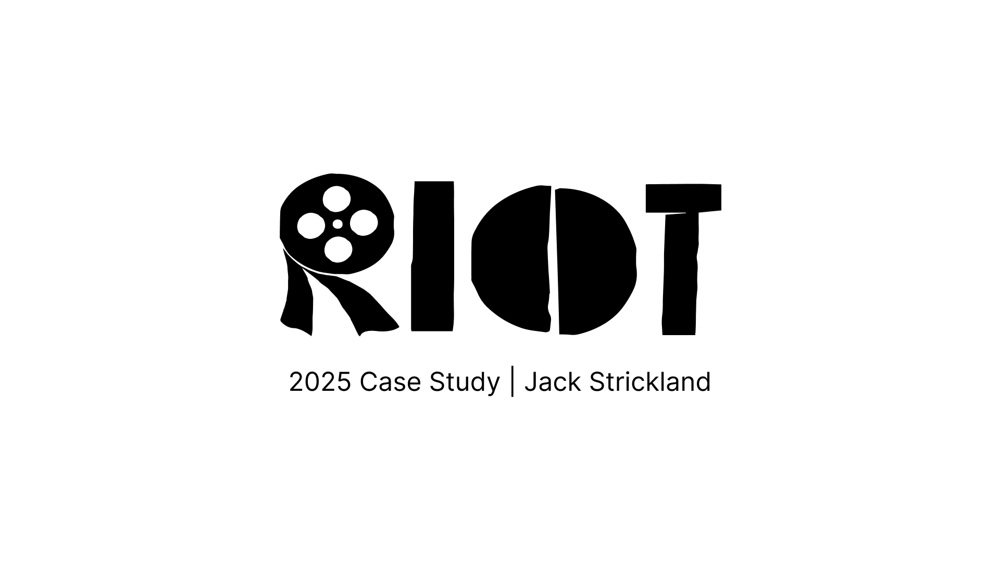
The project
RIOT Film Festival is a conceptual 3-day animation and mixed-media film festival at the University of Washington, developed over 10 weeks in HCDE 308. The goal was to create a complete visual communication system: a bold identity grounded in research, expressed through print and digital touchpoints, and validated through user testing.
Communication goal
Design a festival identity that communicates inclusion, artistic originality, and experimental energy — one that supports emerging filmmakers while standing apart from the polished conventions of mainstream festival branding.
Deliverables
Competitor analysis, three user personas, customer journey map, user flow, mood board, color system, typography pairing, wordmark iterations, UI style tile, icon set, wireframes with user testing, high-fidelity mobile app, festival poster, directional signage, and a campus wayfinding map.
01 / Research
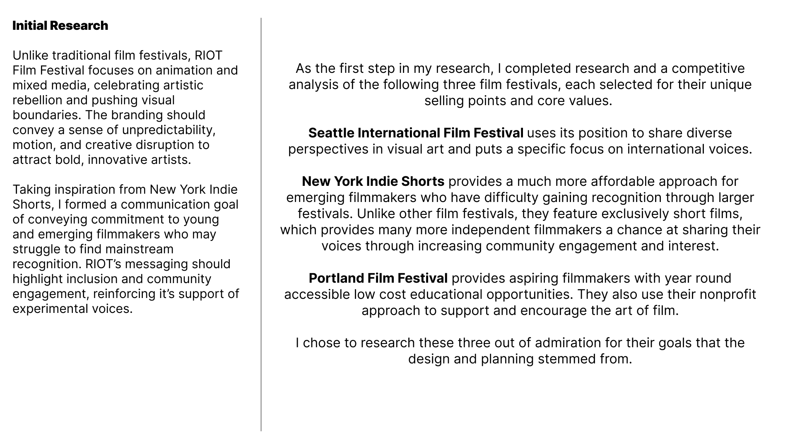
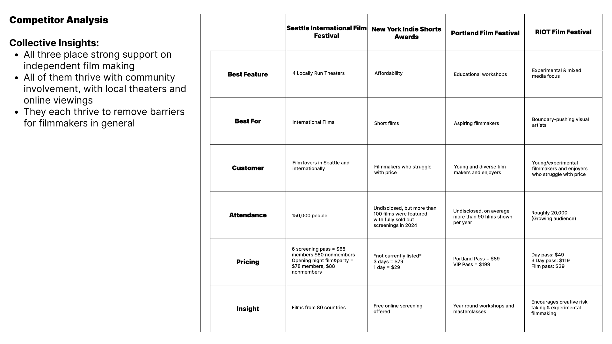
Initial research focused on animation and mixed-media festival communication — studying SIFF, NY Indie Shorts, and Portland Film Festival to identify gaps in how festivals communicate inclusion and experimental support. A 5-column competitor analysis surfaced pricing models, target audiences, and identity strategies to inform RIOT's differentiation.
02 / User Research
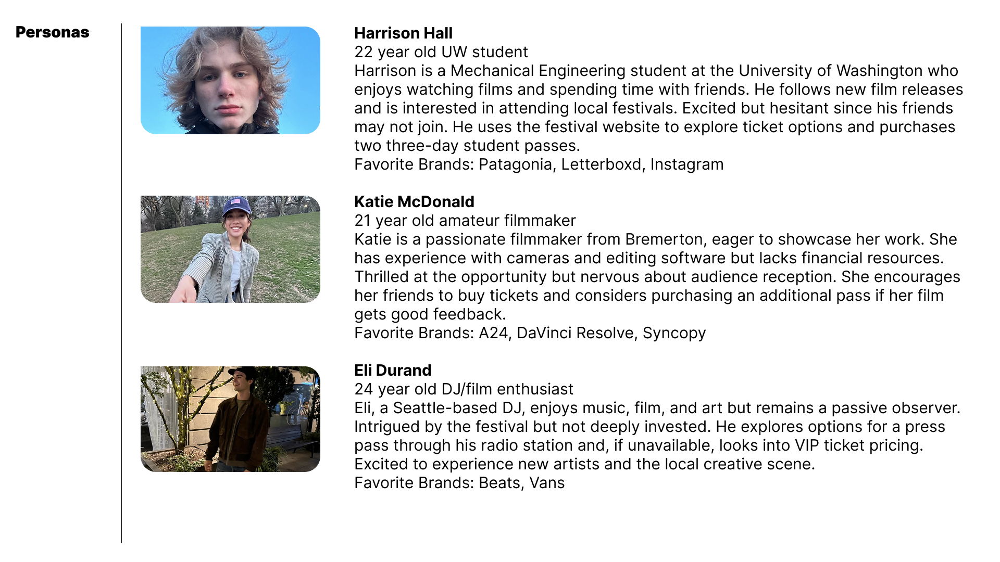
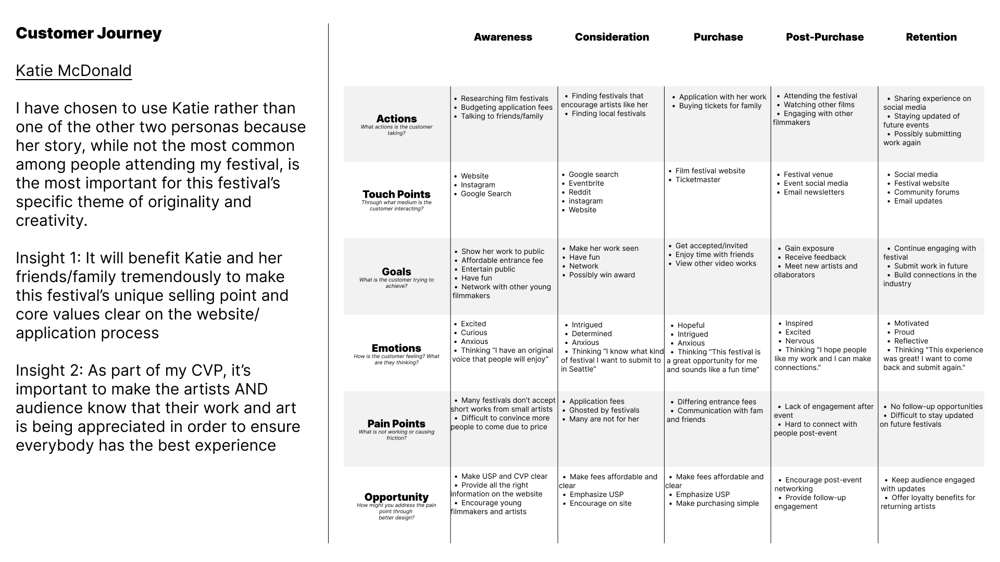
Three personas anchored the research: Harrison Hall (audience), Katie McDonald (emerging filmmaker), and Eli Durand (festival-goer and DJ). The customer journey mapped Katie's path from awareness to retention — surfacing two core insights: the USP must be legible on the website, and both artists and audience need to feel their work and presence are valued.
03 / Direction
MOOD BOARD
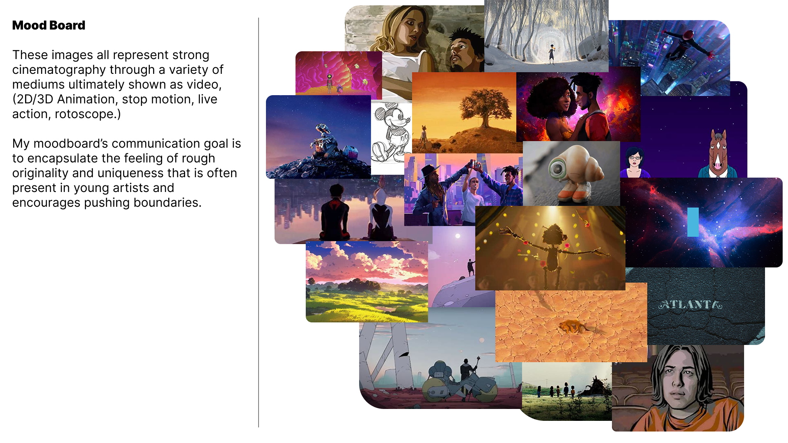
A collage of animation stills — WALL-E, Spider-Man: Miles Morales, Pinocchio, Bojack Horseman — framing the communication goal of rough originality and sketch-like creative energy.
USER FLOW — TICKET PURCHASE
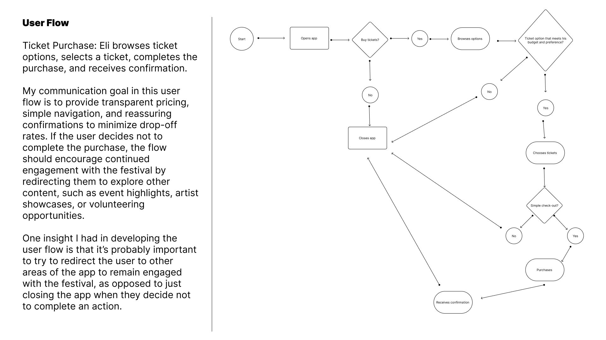
Eli browses options, selects a ticket, and receives confirmation. The flow prioritizes transparent pricing and reassuring confirmations — redirecting users who exit back into festival content rather than dead ends.
Color system
A triadic palette — purple, blue-green, and yellow-orange — chosen to convey balance, beauty, and contrast. Primary hues (#3A1C6B and #30AFA0) meet WCAG contrast thresholds at 7.26:1 and 7.05:1.
#3A1C6B
#30AFA0
#ECDCF9
#C2F5EF
#B88C36
#FCBF48
04 / Typography
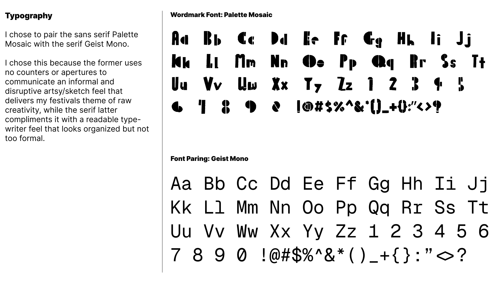
Palette Mosaic (wordmark) paired with Geist Mono (body). Palette Mosaic uses no counters or apertures — instead putting rough lines of separation between fills — communicating disruption. Geist Mono delivers a typewriter-readable complement that feels organized without being formal.
05 / Wordmark
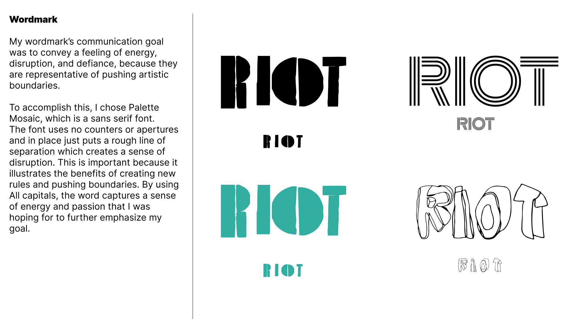
Four wordmark explorations — solid black, triple-line outline, teal fill, and hand-drawn sketch — converging on the bold all-caps Palette Mosaic mark. All caps emphasizes energy and passion; the rough letterforms embody the theme of pushing artistic boundaries.
06 / UI Style tile & icons
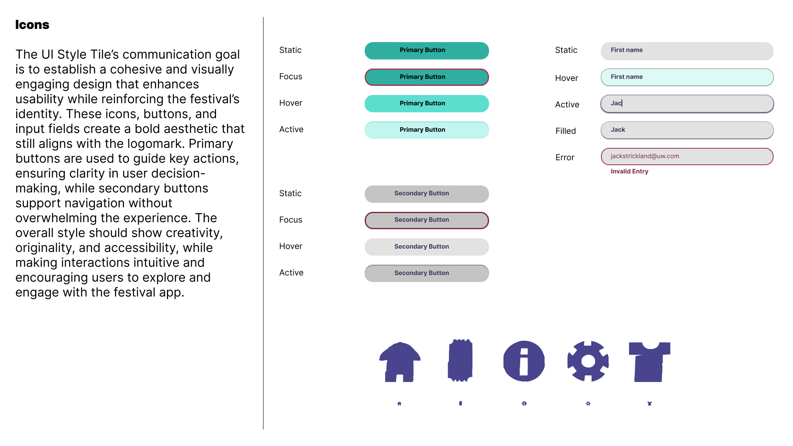
Primary buttons guide key actions using the blue-green accent; secondary buttons support navigation without competing. The icon set — home, ticket, info, settings, and merch — uses the primary purple and bold chunky forms that echo the wordmark's energy.
07 / Wireframes & user testing
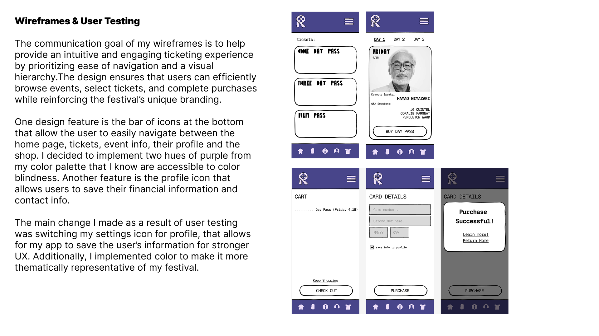
Five wireframe screens — ticket selection, day schedule, cart, card details, and purchase confirmation — prioritize ease of navigation and visual hierarchy throughout the checkout flow. Key change from user testing: settings icon replaced with a profile icon that saves financial and contact information, improving the UX for repeat attendees.
08 / High-fidelity mobile interface
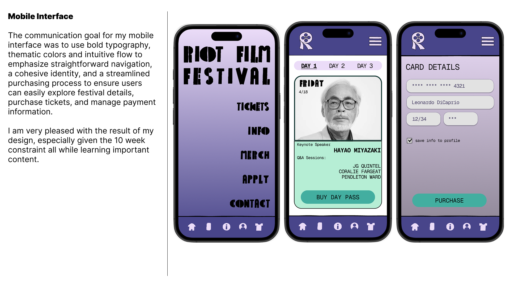
The final mobile app uses bold Palette Mosaic typography, thematic purple and teal palette, and a bottom icon bar for navigation between home, tickets, info, profile, and merch. The ticket purchase flow surfaces keynote speakers (Hayao Miyazaki, Hiro Murai, Richard Linklater), day-pass pricing, and a streamlined card entry screen with a profile-save option.
09 / Festival poster
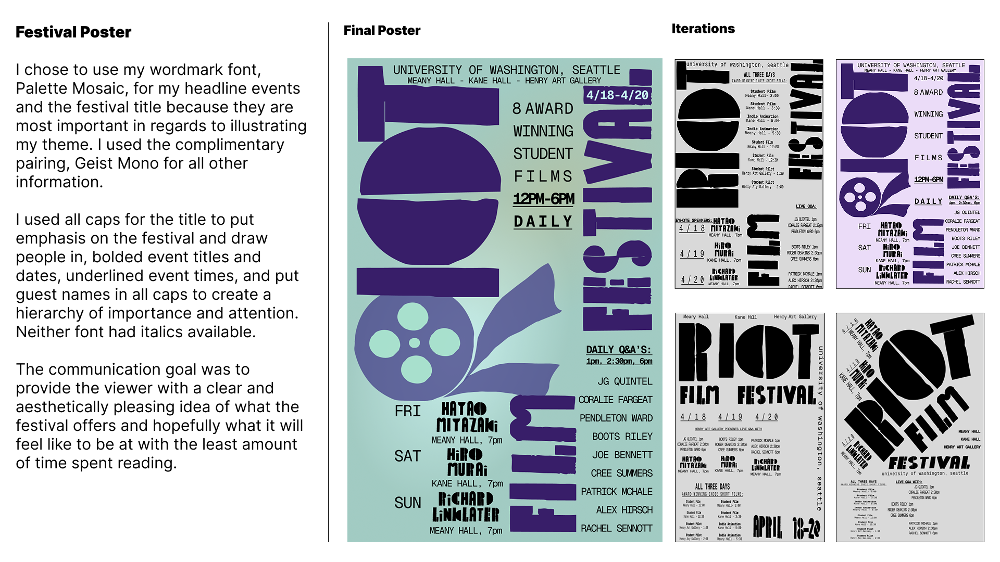
Final poster + iterations
The final poster uses Palette Mosaic for the festival title and headline events — communicating energy and thematic clarity. Geist Mono handles all supporting information. All-caps titles establish hierarchy; bolded event names, underlined times, and all-caps guest names create three levels of visual priority.
The event runs April 18–20 at Meany Hall, Kane Hall, and Henry Art Gallery. Featured keynote speakers: Hayao Miyazaki (Fri), Hiro Murai (Sat), Richard Linklater (Sun). Daily Q&A sessions at 1pm, 2:30pm, and 6pm.
Four poster iterations explored layout, color density, and compositional balance before arriving at the final teal-and-purple split composition with the oversized film-reel R lettermark.
10 / Signage & wayfinding map
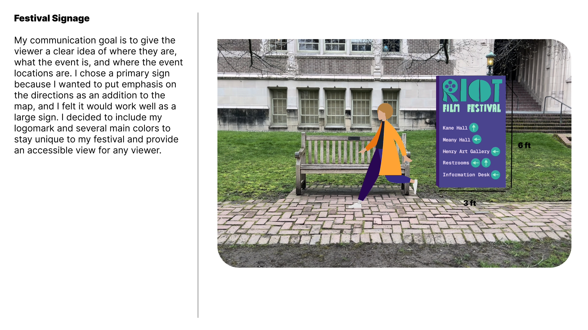
A 6-ft directional sign placed at a UW campus entrance — directing attendees to Kane Hall, Meany Hall, Henry Art Gallery, restrooms, and the information desk. The logomark and triadic palette anchor the sign as unmistakably RIOT.
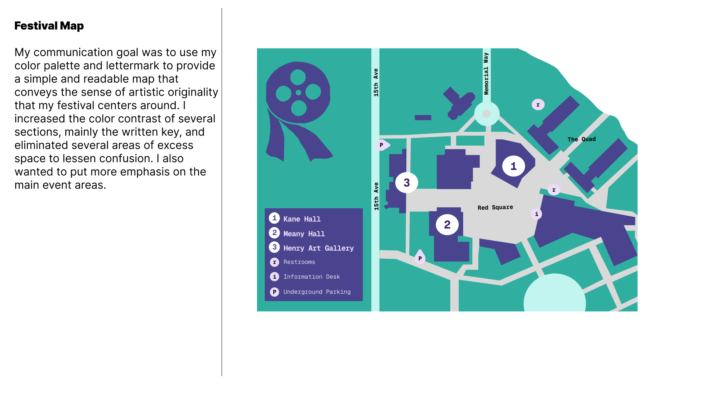
A campus wayfinding map using the color system to differentiate the three event buildings (Kane Hall, Meany Hall, Henry Art Gallery) from surrounding campus. Numbered markers, restroom icons, information desk markers, and underground parking callouts provide accessible, at-a-glance orientation.
What I built
RIOT is a complete visual system developed from research to final deliverable in 10 weeks. Every touchpoint — the poster, the app, the signage, the map — speaks the same visual language: bold, sketch-inspired, triadic, and rooted in the idea that raw creativity deserves its own stage.
What I learned
Designing for a fictional festival pushed me to make every design decision earn its place — there was no existing brand to defer to. User testing on the wireframes revealed how much a single icon swap (settings to profile) changes the emotional trust a user places in a checkout flow. The identity work taught me how to build a design language from scratch and apply it consistently across scales from mobile UI to a 6-foot printed sign.